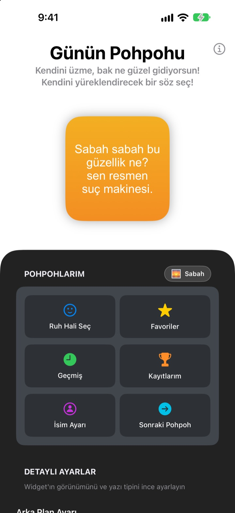
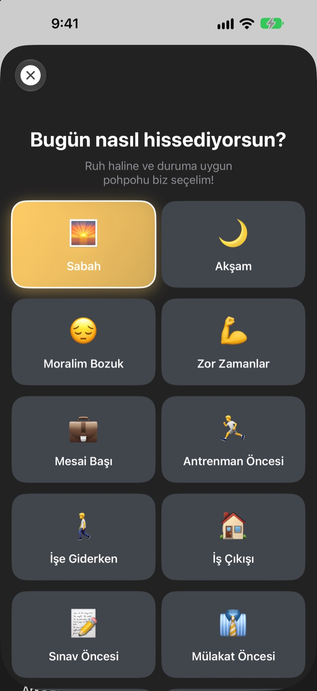
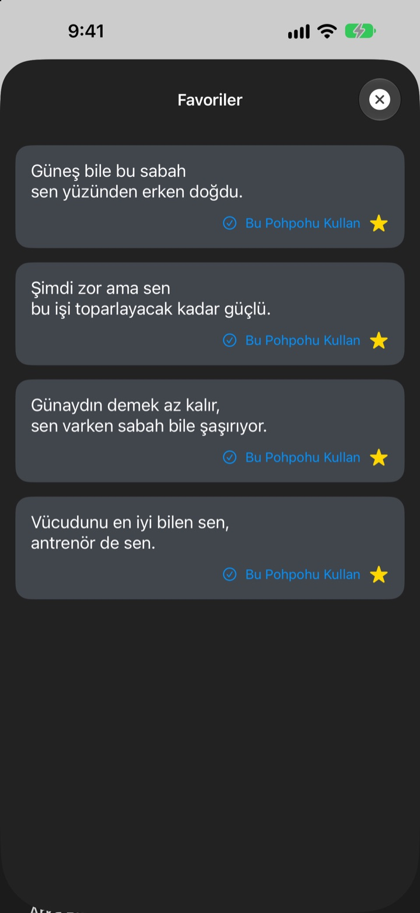
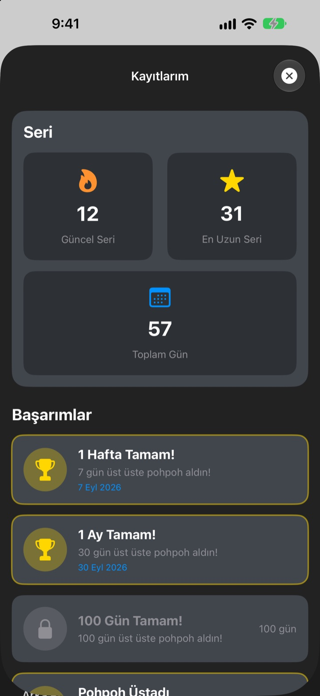

Telefonu her eline aldığında
en büyük hayranın seni bekliyor
Günün Pohpohu, seni bile isteye fazlasıyla öven bir widget. Sabah sabah pohpohu, mülakattan önce mülakat pohpohu. Yazı tipi, renkler ve arka plan tamamen sana kalmış.
Tek satın alma, her şey açık. Abonelik yok, reklam yok.

Hemen bir pohpoh al
Bir ruh hali seç, widget ona uygun pohpohu göstersin. Sonraki Pohpoh'a dokun, 281 söz arasından rastgele biri gelsin.
En sert eleştirmenin kim? Yoksa sen misin?
İşe giderken, mülakattan önce, iş çıkışında kafandaki ses hep söylenir. Günün Pohpohu günde birkaç kez ana ekrandan senin tarafını tutar, hem de biraz abartarak. Kendini gülümserken bulduğun an, özgüvenin de biraz yerine gelir.
Ruh haline uygun pohpoh
Sabah, İşe Giderken, Zor Zamanlar, Mülakat Öncesi ya da Randevu Öncesi gibi 14 ruh hali ve durumdan birini seç, uygun pohpoh hemen widget'ta belirsin. Karar veremedin mi? Rastgele de var.

Sevdiklerini sakla
Yıldıza dokunup Favoriler'e kaydet, eskilerine Geçmiş'ten bak. Bu Pohpohu Kullan'a dokun, doğrudan widget'a geçsin.

Her gün uğra, sayı büyüsün
Baktığın her gün serini uzatır. Üst üste 7, 30 ya da 100 güne ve toplamda 50 ile 100 güne ulaştığında başarımların kilidi açılır.

Üç adımda başla
- 1
Ruh halini seç
Ruh Hali Seç'i aç ve şu ana uyana dokun. - 2
Widget'ı süsle
Detaylı Ayarlar'da yazı tipi, yazı rengi, arka plan ve yenileme sıklığını seç.
- 3
Ana ekrana ekle
Ana ekrana basılı tut, + simgesine dokun ve Günün Pohpohu'nu bul.
Widget'ı böyle kişiselleştir
- Yazı Tipi
- Futura, Georgia ve Marker Felt dahil 13 seçenek
- Yazı Rengi
- İstediğin herhangi bir renk
- Arka Plan
- İki renkli gradyan ya da hazır arka plan fotoğraflarından biri
- Hizalama
- Sola, ortaya ya da sağa
- Satır Aralığı
- Daha sık ya da daha ferah
- Yenileme Sıklığı
- Her 5, 15 ya da 30 dakikada yeni bir pohpoh
Widget boyutunu ana ekrana eklerken seçersin.
Bir kez al, iş bitsin
Uygulama
- 14 ruh haline 281 pohpoh
- Zevkine göre süslenen ana ekran widget'ı
- Favoriler ve Geçmiş
- Seriler ve başarımlar
Geliştiriciye destek ol
- Küçük, orta ya da büyük bahşiş seç
- Hiçbir şeyin kilidini açmaz. Sadece teşekkür etmenin bir yolu
Yalnızca canın istediğinde.
Abonelik yok, ek satın alma yok, reklam yok.
Sık sorulan sorular
Widget'ı nasıl eklerim?
Ana ekranda boş bir yere simgeler titreyene kadar basılı tut, üstteki + simgesine dokun, Günün Pohpohu'nu ara ve bir boyut seç.
Sonraki pohpoh nasıl seçiliyor?
Bir ruh hali seçtiğinde ona uygun pohpoh hemen widget'a gelir. Sonrasında widget, seçtiğin yenileme sıklığında 281 pohpoh arasından rastgele birini gösterir. Uygulamada Sonraki Pohpoh'a dokunup kendin de geçebilirsin.
Yazı tipini ya da yenileme sıklığını değiştirebilir miyim?
Evet. Detaylı Ayarlar'da yazı tipini, yazı rengini, arka planı, hizalamayı, satır aralığını ve yenileme sıklığını değiştirebilirsin: 5, 15 ya da 30 dakika.
Widget hemen değişmedi.
Widget'ların ne zaman yeniden çizileceğine iOS karar verir, bu yüzden bazen seçtiğin sıklığın biraz gerisinde kalabilir. Uygulamayı açıp kapat, widget güncellenir.
Seri nasıl işliyor?
Pohpoh'a baktığın her ardışık gün serine bir gün ekler. Kayıtlarım'da güncel serini, rekorunu, toplam gün sayını ve başarımlarını görebilirsin.
Favorilerim ve geçmişim kayboldu.
Her şey yalnızca cihazında saklanır, bu yüzden uygulamayı silersen ya da telefon değiştirirsen taşınmaz. Silmediğin halde kaybolduysa bize e-posta at.
Verilerim bir yere gönderiliyor mu?
Hayır. Uygulama kişisel veri toplamaz. Favorilerin ve geçmişin cihazında kalır.
Hata bildirmek ya da öneri yapmak istiyorum.
Doğrudan uygulamadaki Geliştiriciyle İletişim'den, e-postayla ya da Instagram'dan @lee25_ios'a DM atarak gönderebilirsin. Görür görmez yanıt veririz.
Soru ya da önerin mi var? leeo@kakao.com adresine yaz.